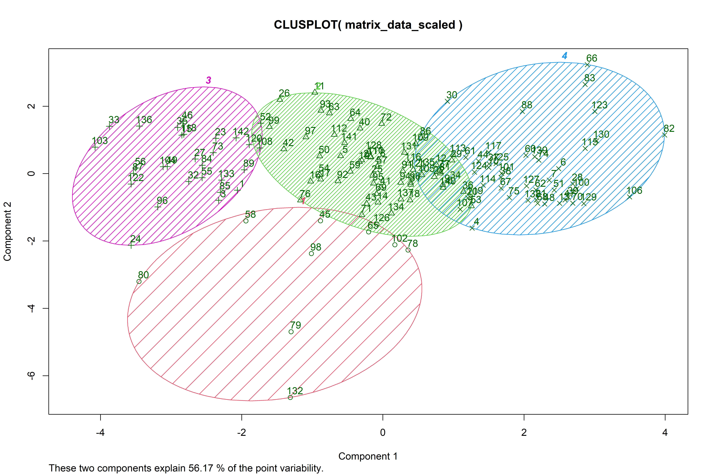

3 La méthode des K-Moyennes
La méthode des K-Moyennes communément appelée l’algorithme K-Means est une méthode de partitionnement des données et un problème d’optimisation combinatoire. En Machine Learning nous considérons cette méthode comme une technique d’apprentissage non supervisé. Étant donnés des points et un entier \(k\), le problème est de diviser les points en \(k\) groupes, souvent appelés clusters, de façon à minimiser une certaine fonction. On considère la distance d’un point à la moyenne des points de son cluster ; la fonction à minimiser est la somme des carrés de ces distances. Un cluster est un groupe de données qui partage des traits communs.
Beaucoup de problèmes économiques et sociaux utilisent l’algorithme K-Means pour segmenter, et classer des individus (personnes, collectivités, pays etc…) selon leurs similarités et tirer des conclusions et élaborer des théories.
3.1 Généralités sur l’algorithme
La première étape dans l’implémentation de l’algorithme K-Means est de choisir une mesure de distance entre les points. Il est courant d’utiliser la distance euclidienne entre deux points. Cette distance se calcule comme suit :
\[ d_{euc} = \sqrt{\sum_{i=1}^n (x_i - y_i^2)} \] \(x\) et \(y\) sont des vecteurs de taille \(n\)
L’idée de base derrière le clustering k-means consiste à définir des clusters de sorte que la variation intra-cluster totale (appelée variation totale intra-cluster) soit minimisée. Il existe plusieurs algorithmes de k-moyennes disponibles. L’algorithme standard est l’algorithme de Hartigan-Wong (1979), qui définit la variation totale intra-cluster comme la somme des distances au carré: les distances euclidiennes entre les éléments et le centre de gravité correspondant.
\[W(C_k) = \sum_{x_i \in C_k} (x_i - \mu_k)^2 \] où \(x_i\) est un point qui appartient au cluster \(C_k\) et \(\mu_k\) est la valeur moyenne des points qui sont classés dans ce cluster.
Chaque observation est donc assignée à un cluster de telle manière que la somme des carrés de la distance de l’observation par rapport au centre du cluster \(\mu_k\) est minimisée. Nous définissons la variation totale intra-cluster comme suit:
\[ \sum_{k=1}^k W(C_k) = \sum_{k=1}^k \sum_{x_i \in C_k} (x_i - \mu_k)^2 \] La variation totale intra-cluster mesure la fiabilité du clustering et c’est elle que le programme d’optimisation cherche à minimiser. Plus elle est petite mieux est la fiabilité.
La résolution de ce programme se fait via l’algorithme suivant :
L’algorithme K-means peut être résumé comme suit:
- Spécifiez le nombre de clusters (K) à créer (par l’analyste)
- Sélectionnez au hasard k objets de l’ensemble de données comme centres ou moyens de cluster initiaux
- Attribuer à chaque observation le centre de gravité le plus proche, en fonction de la distance euclidienne entre l’objet et le centre de gravité
- Pour chacun des k clusters, mettre à jour le centre de gravité du cluster en calculant les nouvelles valeurs moyennes de tous les points de données du cluster. Le centre de gravité d’un \(k^{ème}\) cluster est un vecteur de longueur \(p\) contenant les moyennes de toutes les variables pour les observations du \(k^{ème}\) cluster; \(p\) est le nombre de variables.
- Minimiser itérativement le total dans la somme des carrés. Autrement dit, répétez les étapes 3 et 4 jusqu’à ce que les attributions de cluster cessent de changer ou que le nombre maximal d’itérations soit atteint.
La résolution de cet algorithme pourrait être fastidieux manuellement donc nous allons recourir à une approche informatique en utilisant le langage de programmation R dans lequel cet algorithme est implémenté de manière efficiente.
3.2 Applications
Nous voulons donc démontrer par un exemple l’utilité de cet algorithme pour des questions économiques. Nous allons nous intéresser à la macroéconomie mondiale. La Banque mondiale, dans son programme World Development Indicators a créé plus de 3000 indicateurs pour mesurer le niveau de développement des pays et territoires du monde. Ces données sont gratuitement disponibles sur leur site World Development Indicator | Databank.
Pour l’application des K-Means, j’ai sélectionné les variables suivantes :
- Le pourcentage de la population ayant accès aux technologies de communication (TELECOM)
- La part de la population active qui travaille dans le secteur agricole (EMPLOIAGRIC)
- La croissance du Produit Intérieur Brut (PIB) (PIBCROIS)
- Le PIB par habitant (PIBCAPITA)
- Le pourcentage du PIB consacré aux dépenses publiques de l’Etat (DEPENSESPUB)
- La superficie du pays en \(Km^2\) (SUPERFICIE)
- L’espérance de vie (ESPERANCE)
- Le taux de fertilité des femmes (nombre moyen d’enfants par femme en âge de procréer) (FERTILITE)
- La part du revenu national épargné (EPARGNE)
Il y a 142 observations dans la base de données, qui représentent des pays et territoires.
Avant d’appliquer l’algorithme nous avons choisi de normaliser chaque variable en soustrayant sa moyenne puis en la divisant par son écart-type. Le but de cette transformation est de donner à chaque variable un poids équivalent dans calcul des distances entre les points selon la distance euclidienne. Par exemple le PIB/habitant peut aller jusqu’à plus de 50000 dollars tandis que la croissance du PIB est souvent inférieure à 10%. Normaliser les variables revient donc à homogénéiser chaque variable et enlève l’unité de mesure.
Nous commençons par une première résolution de l’algorithme en choisissant \(k=4\), l’algorithme de Hartigan-Wong (que nous avons décrit plus haut) puis le nombre maximal d’itération à 15.
set.seed(123)
res_kmeans <- kmeans(matrix_data_scaled, centers = 4,
algorithm = "Hartigan-Wong",
iter.max = 15)Voici donc les résultats :
List of 9
$ cluster : int [1:142] 3 2 3 4 2 4 4 2 2 4 ...
$ centers : num [1:4, 1:9] -0.3817 -0.2067 -0.0283 0.3825 0.0255 ...
..- attr(*, "dimnames")=List of 2
.. ..$ : chr [1:4] "1" "2" "3" "4"
.. ..$ : chr [1:9] "TELECOM" "EMPLOIAGRIC" "PIBCROIS" "PIBCAPITA" ...
$ totss : num 1269
$ withinss : num [1:4] 92.2 178.5 130.1 302.5
$ tot.withinss: num 703
$ betweenss : num 566
$ size : int [1:4] 10 59 29 44
$ iter : int 4
$ ifault : int 0
- attr(*, "class")= chr "kmeans"L’algorithme a convergé au bout de 4 itérations, c’est ce qu’indique l’argument iter. La somme totale des carrés des distances par rapport au centre de chaque cluster est de 1269, ce qu’indique l’argument totss.
La variation individuelle intra-classe est représentée par le résultat withinss.
La variation totale intra-cluster est égale à 703, c’est la somme des variations individuelles. Nous ne pouvons pas dire si ce nombre est grand ou petit car il n’existe pas un indicateur pour exprimer la fiabilité en pourcentage. Mais ce premier résultat nous sert de référence. Les praticiens de cet algorithme utilisent souvent une approche itérative qui consiste à choisir un vecteur de paramètres \(k\) qu’on donne à l’algorithme pour qu’il partitionne les données, puis le nombre \(k\) qui donne la moindre variable totale intra-classe sera retenue.
Affichons comment l’algorithme a partitionné les pays selon les clusters.
| Clusters | Pays |
|---|---|
| 1 | Eswatini, Haiti, Iraq, Lebanon, Lesotho, Liberia, Namibia, Nicaragua, South Africa, Timor-Leste |
| 2 | Albania, Armenia, Azerbaijan, Bahamas, The, Bangladesh, Belarus, Belize, Bhutan, Bolivia, Bosnia and Herzegovina, Botswana, Bulgaria, Cabo Verde, Cambodia, Chile, Colombia, Costa Rica, Croatia, Dominican Republic, Ecuador, Egypt, Arab Rep., El Salvador, Georgia, Greece, Guatemala, Guyana, Honduras, India, Indonesia, Jamaica, Jordan, Kazakhstan, Kyrgyz Republic, Latvia, Lithuania, Malaysia, Mauritius, Mexico, Moldova, Mongolia, Montenegro, Morocco, Myanmar, Nepal, North Macedonia, Panama, Paraguay, Peru, Philippines, Poland, Romania, Serbia, Sri Lanka, Thailand, Tunisia, Turkey, Ukraine, Uruguay, Uzbekistan |
| 3 | Afghanistan, Angola, Benin, Burkina Faso, Burundi, Cameroon, Comoros, Congo, Dem. Rep., Cote d’Ivoire, Ethiopia, Gambia, The, Ghana, Guinea, Guinea-Bissau, Kenya, Madagascar, Malawi, Mali, Mauritania, Mozambique, Niger, Nigeria, Pakistan, Rwanda, Senegal, Sierra Leone, Togo, Uganda, Zambia |
| 4 | Argentina, Australia, Austria, Bahrain, Belgium, Brazil, Brunei Darussalam, Canada, China, Cyprus, Czech Republic, Denmark, Estonia, Finland, France, Germany, Hong Kong SAR, China, Hungary, Iceland, Ireland, Israel, Italy, Japan, Korea, Rep., Kuwait, Luxembourg, Macao SAR, China, Malta, Netherlands, New Zealand, Norway, Oman, Portugal, Qatar, Russian Federation, Saudi Arabia, Singapore, Slovak Republic, Slovenia, Spain, Sweden, Switzerland, United Kingdom, United States |
Nous ne pouvons pas dire si ces résultats sont les meilleurs mais nous voyons déjà que l’algorithme a reproduit la réalité. En effet nous voyons par exemple que presque tous les pays se trouvent dans le cluster 3, ce qui montre que ces pays sont plus homogènes au regard des variables que nous avons choisies.
Pour mieux apprécier la distance entre les différents clusters nous pouvons procéder à la visualisation des centres. Or nos variables sont au nombre de 9, il est ainsi impossible de représenter un graphique à 9 dimensions pour observer les clusters. C’est pour cette raison que nous allons appliquer une transformation appelée la transformation de Karhunen–Loève (KLT) qui consiste à réduire la dimension de notre matrice en passant d’une matrice \(m, n =(144, 9)\) à une matrice \(m, p = (144, 2)\) où \(m\) représente le nombre d’individus (observations) et \(n\) le nombre de variables. Les variables synthétiques \(p <n\) résument donc la variabilité des 9 variables initiales en projettant les données dans une dimension \(p\) qui maximise la variance. Cette méthode s’appelle l’analyse en composantes principales 1.

Les deux variables synthétiques (ou composantes principales) nommées Component 1 et Component 2 résument donc à hauteur 56,17% la variance totale des 9 variables initiales. Ainsi sur ce graphique qui représente chaque graphe par un ellipse gaussien nous voyons que les clusters sont bien distincts les uns des autres. Il y a quelques chevauchements entre les certains clusters mais cela est due à la réduction de la dimensionalité.
L’ACP est aussi très utilisé en économie. Un exemple intéressant de cette méthode est en data mining où nous la méthode est utilisée pour syntétiser plusieurs variables qui en des composantes qui sont des combinaisons linéaires des variables initiales.↩